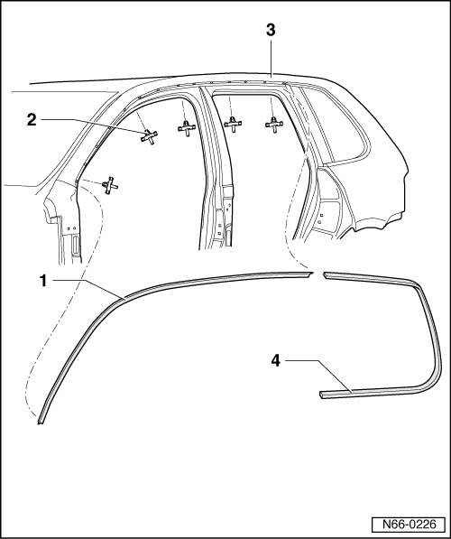

Drip Deflector
Moldings and Trim
Drip Deflector
Removing

- Remove B-pillar trim, refer to --> [ B-pillar Trim ]B-Pillar Trim
- Using a plastic wedge, unclip drip deflector - 1 - from clips - 2 - starting from A-pillar and working toward C-pillar.
Installing
• Before installing, check all the fasteners for damage and replace them if necessary.
- Clip in the drip deflector - 1 - at back of roof frame - 3 - and push backward to side window cover strip - 4 -.
- Then clip on drip deflector - 1 - from back to front.